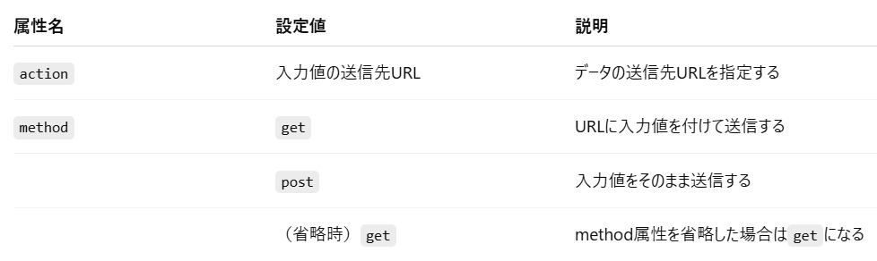
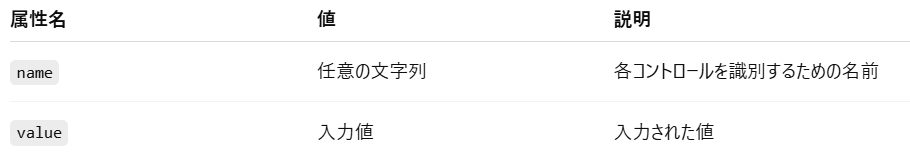
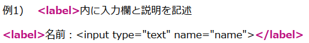
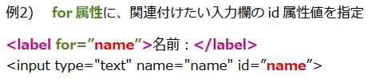
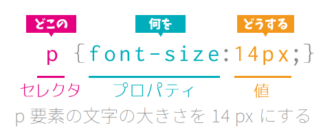
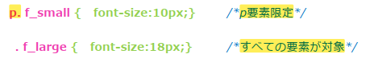
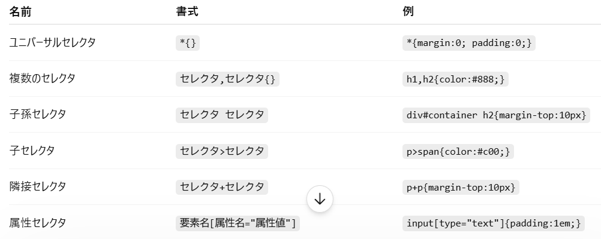
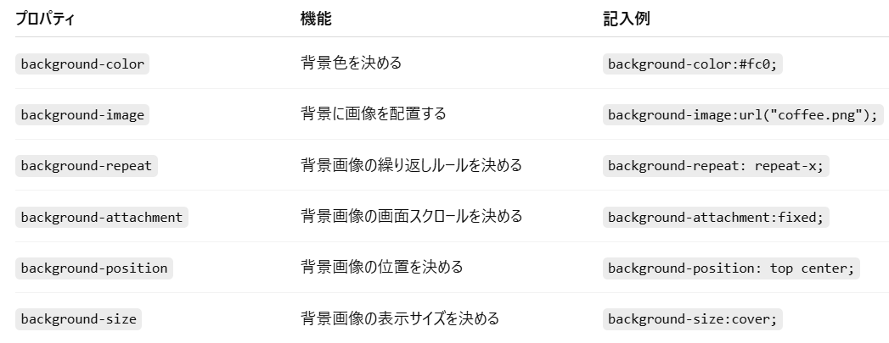

HTML
HTMLの基本
:contentReference[oaicite:0]{index=0} はWebページの構造を作るための言語で、 見出し・段落・リンク・画像などの要素を記述する。
<-- 基本構造 --> <!DOCTYPE html> <html> <head> <title>ページタイトル</title> </head> <body> <h1>見出し</h1> <p>これは段落です</p> </body> </html> <-- よく使うタグ --> <p>段落</p> <a href="https://example.com">リンク</a> <img src="image.jpg" alt="画像"> <div>ブロック要素</div> <span>インライン要素</span>
HTML基礎学習
- HTML には様々なバージョンが存在するため、どのバージョンの HTML として Web ブラウザに読み込んで欲しいのかを、「文書型宣言（DOCTYPE 宣言）」で指定する。
【HTML5】 は<!DOCTYPE html>
- Web ページにもタイトルを必ずつける必要がある。HTML でタイトルを付けるには<title>タグを使用する。
- URL とは「Uniform Resource Locator」の略であり、インターネット上のデータを特定してアクセスするための表記。
（プロトコル＋ドメイン名＋ポート番号＋フォルダ名＋ファイル名）

- 画面の中で特定の画像（image）を表示させたい場合は、<img>タグには表示したい画像を示す src 属性が必要になる。また、仕様上必須ではないが基本的に、 画像の内容を説明するための alt 属性も記述する。src 属性に表示したい画像ファイルの名前をファイルの場所（パス）と供に記述する。
- target 属性はリンクをクリックした際の挙動を制御する属性で、リンクを別のタブで開きたいときに使用する。
- 「相対パス」 … パスが記述されたファイルから見て、パスで指定した先のファイルがどこにあるのかを記す。
- 「絶対パス」 … URL をそのまま貼り付けてファイル位置を記す。
- ブロック要素には、文書の構造を決めるタグが分類される。
いくつかにグループを分割（division）してレイアウト調整を行う際に必ず登場するのが<div>タグ - インライン要素には、テキスト、画像関連、リンクのタグが分類される。
フォーム
- フォームは、クライアントから Web サーバへ情報を送信するための機能
- フォームを作成するには、まずは<form>タグを使用して、Web サーバにデータを送信するためのフォーム領域を作成する必要がある。
なお、<form>タグには入力値の送信先を設定する機能があるため、このタグがないと、入力項目が機能しない。 - <form>タグは、action属性で指定されたURLに各コントロールの入力値を送信する。また、入力値の送信方法は method 属性で指定する。

- 画面上の入力項目のことを「入力コントロール」と呼ぶ。コントロールを作成する各要素には、共通して name 属性と value 属性という 2 種類の重要な属性が
あり、これらの属性によりプログラムはサイト閲覧者の入力情報を取得できる。
入力した値を識別するための名前＝name属性・最初からデータを表示する＝value属性

<html> … HTML文書全体を囲む。ページ全体を囲んで HTML 文書であることを指定する最上位の要素。
<head> … 画面には表示されない付加的な情報（メタデータ）を記述する。
<body> … 画面に表示されるページの内容を記述する。
<meta> … メタ情報を定義するタグ。すでに学んだ文字コードの指定以外にも検索ワード対策（通称 SEO）に大きく影響を及ぼす属性も多い。
【ブロック要素】
<p> … 画面の中で文章のまとまり＝段落（paragraph）を表す。<p>タグによって段落が指定された場合、その次に続く記述は改行された
状態で始まる、ブロック要素を持つ。
<h1>～<h6> … 見出しを表す際に使用。見出しレベルの数字が低いほど重要度が増す。
<ul> … 「・」による箇条書きを行う。
<ol> … 番号付きの箇条書きを行う。
<table> … 表組み(table)を作成するタグ。親子関係は<table> → <tr> → <td>(<th>)と決まっており、順番を入れ替えることはできない。
<tr> … 横一行（table row）を表すタグ。
<td> … 各セル（table data）を表すタグです。必ず<tr>タグの子要素として記述される必要があり、表組みに行が 1 つしかない場合でも、<tr>タグを省略
して<td>タグのみを記述することはできない。同一テーブル内のすべての<tr>は、内包される<td>と<th>の合計数が同じでなければいけない。
また、colspan 属性（左右）や rowspan 属性（上下）を使うと、複数のセルを結合できる。
<th> … 見出しセル（table header）であることを意味するタグ。標準では太字かつ中央揃えで表示される。
【インライン要素】
<br> … 改行（line break）。開始タグと終了タグが存在せず単独で完結するという特徴を持つ。このようなタグは空要素と呼ばれる。なお、
改行タグは文字として扱われ、インライン要素と呼ばれる。
<img> … 画像を表示するタグで src 属性とセットで扱う。src="ファイルパス" 、alt="画像の説明" 、width="横幅" 、height="高さ"
<a> … リンク設置用のタグ。船の錨を意味する anchor の頭文字を抜粋したタグ。<a>タグ単体ではリンクは機能せず、href 属性の
値に遷移先を指定することで、はじめてリンク機能を持つことができる。また、遷移先の指定には絶対パスと相対パスという
2 通りの方法がある。target 属性は属性値に"_blank"を指定することでリンク時に別タブでリンク先を表示することができるため、外部
サイトへのリンクなど、遷移後も自分自身を表示させておきたいときに有効。
※ href の属性値に "#id 名"を記述することで同じ名前の id を持つ要素へとページ内リンクさせることもできる。 ちなみに、id 名を省略して#のみを記述
すると そのページの最上部へリンクさせることもできる。
<input> … フォームのコントロールを作成するための要素。name属性と value 属性の他に、type 属性を指定できることが特徴で、コントロールの種類を指定できる。
type 属性の値が reset、submit、button の場合、value 属性の値はボタン上に表記される文言となる。また、type 属性の値が radio、または checkbox のコントロール
で、選択肢を複数用意したい場合、各コントロールの name 属性には同一の値を指定する。
<textarea> … 複数行入力できるテキストボックス（テキストエリア）を作成するための要素。コントロールの大きさは cols 属性(横幅)と rows 属性(高さ)
によって決まり、それぞれ文字数と行数で指定します。このコントロールには value 属性は無いが、初期値は要素の内容で決めることができる。
<select> … ドロップダウンリストを作成するためのタグ。選択肢は子要素の<option>タグで記述。name 属性は指定できますが、value 属性は<option>タグで指定する。
<option> … ドロップダウンリストの選択肢を作成するもので、<select>タグの子要素として記述する。value 属性には、プログラムに送信される値（送信値）を指定する。
<label> … フォームの入力欄（コントロール）に対して説明を付ける目的で使用。なお、使わなくても説明は書ける。


CSS
CSSの基本
:contentReference[oaicite:1]{index=1} はHTMLにデザインを適用するための言語で、 文字色・余白・レイアウトなど見た目を制御する。
<-- 基本の書き方 -->
h1 {
color: red;
font-size: 24px;
}
p {
color: #333;
line-height: 1.6;
}
<-- クラス指定 -->
.title {
font-weight: bold;
margin-bottom: 10px;
}
<-- ID指定 -->
#main {
width: 100%;
padding: 20px;
}
<-- ボックスモデル -->
.box {
margin: 10px;
padding: 20px;
border: 1px solid #000;
}
CSS基礎学習
- CSS（Cascading Style Sheets）は HTML で構築された画面の要素を操作して、文書の体裁や見た目を整えるために用いられる言語

- ① セレクタ…どこに対してデザインを施すかを指定、② プロパティ…セレクタで指定した対象に対して何を操作するかを指定、③ 値…、フォントサイズ
、文字の色などの各プロパティに対してどうするかを指定する。
- CSS を記述することのできる場所をまとめると全部で以下の 3 通り。
1. HTML の要素に style 属性を使う
2. <head>内に<style>要素を記述
3. CSS ファイルを作成し HTML から読み込む
- 1. HTML の要素に style 属性を使う（インラインスタイル）
HTML タグに style 属性を付与し、直接 CSS を付与する。影響範囲は記述したそのタグのみ。
- 2. HTML の style 要素を使う（内部参照）
<style>タグを記述しその中に記述。<style>タグは<head>タグ内に記述。記述されたページ全体に影響する。
- 3. CSS ファイルを作成し HTML から読み込む。（外部参照）
CSS ファイル（.css）を外部ファイルとして扱い <link>要素を利用して埋め込むことで、同一の CSS が適用される。なお、外部参照は複数の属性も指定できる
セレクタ
- ①タイプセレクタ
HTML のタグを直接指定し、同じ種類のタグはその画面の中で同じデザインになる。しかし、適用範囲が広く、使い勝手がいいとは言えない。使いどころは、 各ブラウザで設定が異なる HTML の初期設定を均一化させる場合（リセット CSS）、文字のリンク色のように全ページ必ず共通でなければいけない部分がある場合に利用する。
- ②class セレクタ
同じデザインを複数の要素で使いまわしたいときや、特定の要素を指定してデザインを当てたいときに便利な指定方法で、もっとも利用頻度が高い記述方法です。HTML のタグ の中に class 属性を記述し、その値を目印として CSS 側からデザインを指定します。CSS 内では、[.（ピリオド）class 名]をセレクタとして使用する。 class 属性と id 属性は、各要素に任意の名前をつけるための属性。なお、[要素.class 名]で記述したときと[.class 名]で記述した時に違いがある。

[p.f_small]は、厳密にいうとタイプセレクタ＋class セレクタの合わせ技になり、<p>タグに f_small クラスが付与されている場合のみが条件に当てはまる。 したがって<h2>など<p>以外の要素に[f_small]のデザインが適用されなくなる。タイプセレクタを指定しない[f_large]は、どんな要素であろうが[class="f_large"] の記述さえあればデザインが適用される。また、ひとつの class 属性の属性値に複数の class を組み合わせることができる。
- ③ID セレクタ
基本的にはクラスセレクタと同じ働きをするが、クラスセレクタと違い、同じ ID セレクタは 1 つの HTML ファイル内で１つまでしか指定できないという機能制限がある。 使いどころはページ内で 2 つ以上登場しない大きなブロックの内容をまとめたいときに利用する。CSS 内では、[#ID 名]をセレクタとして使う。
- ④その他のセレクタ

- プロパティが競合した場合はあとで書いた方の CSS が先に読まれた CSS を上書きする。 なお、実際には各セレクタが持つ詳細度というポイントがあり、競合時にポイント計算され高い方が優先されるというルールがある。(!important（10000:例外）)
プロパティ
- 文字装飾
色の指定は次のような 6 ケタの 16 進数で表現され、この 6 ケタをカラーコード、または”Hex（hexadecimal）値”と呼ぶ。
数値は各光源の出力度合いを示しており、数値が低いほど光の出力も低くなり色合いは暗くなり、数値が高くなるほど色合いが明るくなる。各色が最大まで出力されると白（#ffffff）になる。
スタイルシートには文字の色を指定するプロパティ color が用意されて - 文字の太さの指定
文字を太文字にするには font-weight プロパティに bold を指定する
<h1>や<th>など一部の要素はデフォルトプロパティで太字が設定されていますが、これらの要素に対して太字を適用したくない場合には、font-weight プロパティに normal を指定することで、 太字設定を打ち消し、通常の太さを反映させることができ - 文字列に下線を引く
文章に線を引く場合は text-decoration プロパティを使い、値には underline を使用する。リンクを示す<a>要素には初期値で underline が適用されていますが、デザインの都合上、下線を 表示したくない場合には<a>要素に対して text-decoration:none;を付与
- 文字の表示位置を指定
text-align プロパティでは値にそれぞれ left（左揃え）、center（中央揃え）、right（右揃え）を指定できます。text-align が制御するのはインラインコンテンツ（文字列や画像）のみで ブロック要素自体の位置は調整されない。 - 背景装飾
要素の背景に装飾をほどこすための、background プロパティが用意されており、背景色や位置などの一括指定ができる。色の指定方法のみであれば、background-color プロパティを利用し、 color プロパティと同様に 16 進数の値を指定することで設定する

background 以降の記述を省略することが可能。このように特定のプロパティを省略した記法をショートハンドと呼ぶ。 - プロパティが競合した場合はあとで書いた方の CSS が先に読まれた CSS を上書きする。 なお、実際には各セレクタが持つ詳細度というポイントがあり、競合時にポイント計算され高い方が優先されるというルールがある。(!important（10000:例外）)
- 「マウスカーソルが重なったとき」という条件のときのみ CSS を適用させる:hover は、リンクを示す a要素と相性が良い。
ブロック構造
- 文字装飾
色の指定は次のような 6 ケタの 16 進数で表現され、この 6 ケタをカラーコード、または”Hex（hexadecimal）値”と呼ぶ。
数値は各光源の出力度合いを示しており、数値が低いほど光の出力も低くなり色合いは暗くなり、数値が高くなるほど色合いが明るくなる。各色が最大まで出力されると白（#ffffff）になる。
スタイルシートには文字の色を指定するプロパティ color が用意されて - 文字の太さの指定
文字を太文字にするには font-weight プロパティに bold を指定する
<h1>や<th>など一部の要素はデフォルトプロパティで太字が設定されていますが、これらの要素に対して太字を適用したくない場合には、font-weight プロパティに normal を指定することで、 太字設定を打ち消し、通常の太さを反映させることができ - 文字列に下線を引く
文章に線を引く場合は text-decoration プロパティを使い、値には underline を使用する。リンクを示す<a>要素には初期値で underline が適用されていますが、デザインの都合上、下線を 表示したくない場合には<a>要素に対して text-decoration:none;を付与
- 文字の表示位置を指定
text-align プロパティでは値にそれぞれ left（左揃え）、center（中央揃え）、right（右揃え）を指定できます。text-align が制御するのはインラインコンテンツ（文字列や画像）のみで ブロック要素自体の位置は調整されない。 - 背景装飾
要素の背景に装飾をほどこすための、background プロパティが用意されており、背景色や位置などの一括指定ができる。色の指定方法のみであれば、background-color プロパティを利用し、 color プロパティと同様に 16 進数の値を指定することで設定する
background 以降の記述を省略することが可能。このように特定のプロパティを省略した記法をショートハンドと呼ぶ。 - プロパティが競合した場合はあとで書いた方の CSS が先に読まれた CSS を上書きする。 なお、実際には各セレクタが持つ詳細度というポイントがあり、競合時にポイント計算され高い方が優先されるというルールがある。(!important（10000:例外）)
- 「マウスカーソルが重なったとき」という条件のときのみ CSS を適用させる:hover は、リンクを示す a要素と相性が良い。